Forex Market Foundation 5 — Advanced Computational Methods (Excel)
Build a full distribution-of-returns model in Excel to measure FX volatility in percent, then rank every tradable pair by opportunity and risk.
Volatility measures both opportunity AND risk — and the only honest way to compare it across currencies is in percent, not pips. This lesson builds the professional distribution-of-returns model step by step in Excel, then ranks all 27 tradable pairs to reveal where opportunity actually lies.
The gist
- Measure volatility in PERCENT, never pips — pips compare apples to bananas; percent is the one-for-one base system that makes every pair comparable for equivalent position sizes.
- Two return series drive everything: open-to-open % return =(C4-C5)/C5, and high-to-low % daily range =(High-Low)/Low — one measures day-to-day drift, the other the perfect-day maximum.
- Open-to-open returns form a roughly NORMAL bell curve; high-to-low returns are structurally lopsided (they can never be below 0%), so standard-deviation analysis applies only to open-to-open.
- FX returns have FAT TAILS: for AUD/USD ~80% of days fall inside ±1 std dev (0.87%) vs the normal 68.2% — peakier around the mean AND fatter in the extremes than a perfect normal distribution.
- AUD/USD open-to-open std dev is 0.867% vs EUR/USD 0.629%; average up/down day is ±0.29% (AUD) vs ±0.21% (EUR) — small margins before spread and financing costs.
- On average an AUD/USD high-to-low 'perfect day' is 1.165% (max 10.89%) vs EUR/USD 0.823% (max 4.22%) — AUD is nearly twice the magnitude but still tiny.
- Up-days and down-days are ~50/50 (AUD/USD 49.52% up, 49.42% down) — daily direction is a coin toss no technical strategy can change.
- Ranking all 27 tradable pairs by std dev: AUD/JPY highest at 1.198%, down to AUD/NZD lowest at 0.462% — EUR/USD, GBP/USD and GBP/EUR sit near the bottom, which is exactly why 90% of FX day traders lose money.
- The conclusion: daily FX opportunity is objectively tiny, so increase the time horizon (weekly/monthly) to capture real volatility and fundamental trend.
Why we do this: a base system for opportunity and risk
- Two anchoring principles: (1) comparing pips is NOT a one-for-one base system, so everything must be converted to percentages; (2) risk and opportunity go hand in hand — volatility measures both.
- When you compare multiple assets in percent, you discover which have the most and least risk/opportunity per unit of currency deployed (i.e. for equivalent position sizes).
- This is the true, professional-trader measure of opportunity and risk — the same method used on bank and hedge-fund desks.
The whole exercise exists to give a comparable base system across the entire spectrum. Percent is the anchor; pips are how brokers want you to think, because they obscure like-for-like comparison.
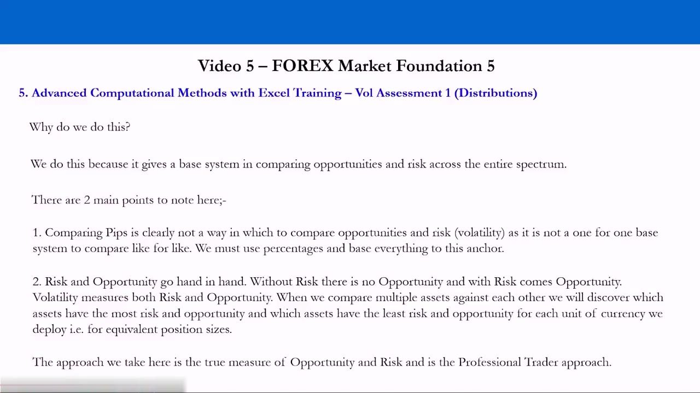
Getting the data: Investing.com into Excel
- Daily historical prices come from investing.com/currencies — here AUD/USD from 1st October 2008 onward, daily periods.
- There is no clean export, so you manually click-drag to select the price table (including column titles), copy with Ctrl+C, and paste into cell A1 with Ctrl+V.
- Save the workbook as something sensible (e.g. 'FX returns distributions') and keep saving as you go.
- Covered Examples span four definitions of the tradable set — Ex-Commodity Float Majors (EURUSD, USDJPY, GBPUSD, USDCHF, EURCHF, EURJPY, GBPEUR, GBPJPY, GBPCHF, CHFJPY), Ex-Commodity Float Minors (USDSEK, EURHUF), Commodity Float Majors (AUDUSD, AUDJPY, AUDNZD, AUDCAD, USDCAD) and Commodity Float Minors (USDNOK, USDRUB, USDZAR, EURNOK, EURRUB, GBPZAR).
Every pair analysed is a floating regime; the split is by how concentrated the currency is in one or two commodity prices versus a diverse set of variables — the definitions built up in earlier videos.
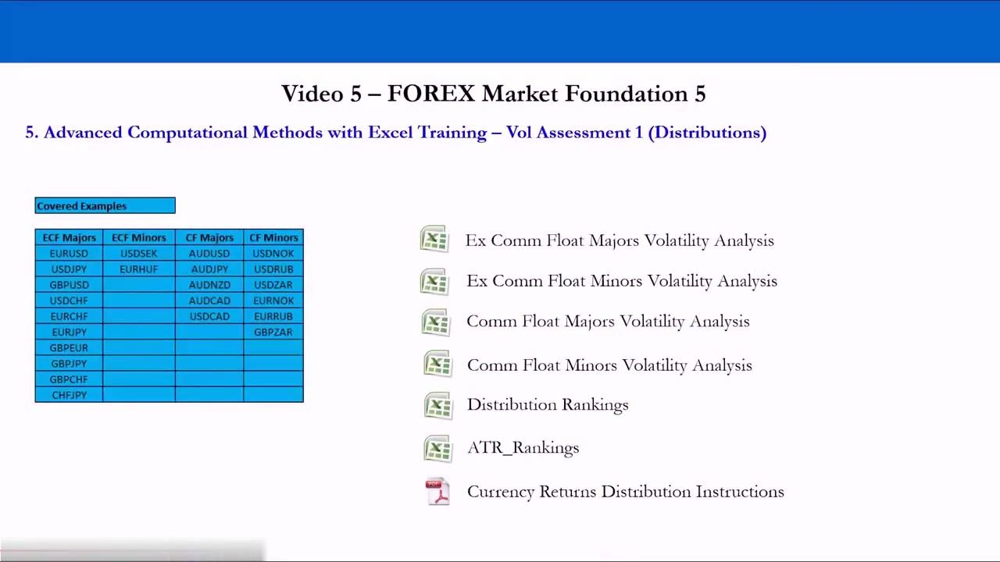
Calculating the two return series
- Open-to-open % return in column G: =(C4-C5)/C5 — today's open minus yesterday's open, divided by yesterday's open (uses cell references, e.g. C2 vs C3).
- High-to-low % range in column H: (High − Low) / Low of the SAME day — the return of buying the low and selling the high.
- Double-click the cell's bottom-right black box to copy the formula down to the end of the data; delete the final #DIV/0! cell (no prior day exists before Oct 1st).
- Format both columns as a percentage to three decimal places for readability.
Open-to-open captures day-to-day drift; high-to-low captures the maximum intraday range — the theoretical 'perfect day'. These two series feed every statistic that follows.
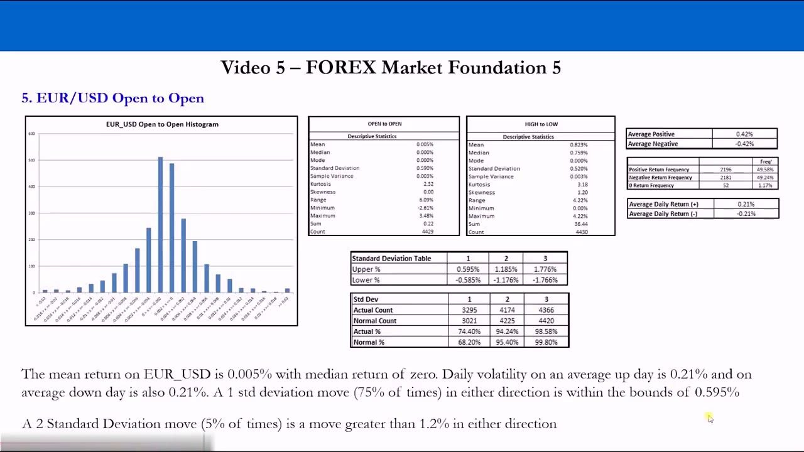
Defining the ranges (intervals)
- In column J, build ~20 ranges from −3% to +3%: start at −0.03, then −0.027, and drag down in steps of 0.3% (0.003) up to 0.03.
- Different assets have different volatilities, so the ranges require some discretion — −3% to +3% in 0.3% steps is a good starting point.
- Many small intervals make the histogram easier to interpret — you see occurrences in narrower ranges.
These intervals become the bins that sort every daily return into a range, so the distribution can be seen and its probabilities read off.
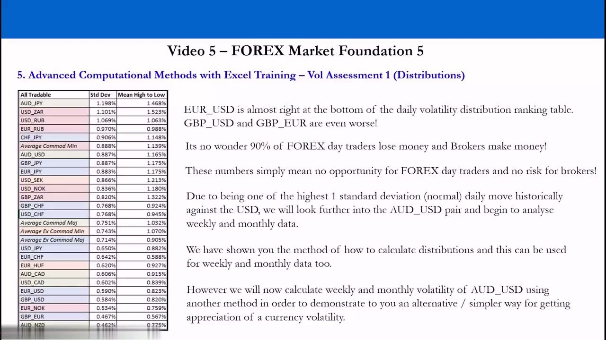
Building the frequency table with the Data Analysis tool
- Enable the Analysis ToolPak add-in (File > Options > Add-ins > Go), then Data > Data Analysis > Histogram.
- Input range = all open-to-open returns (G2 to end via Ctrl+Shift+Down); Bin range = the intervals (J2:J22); Output range = K1.
- The output shows Bin | Frequency: the first count is how many returns are below the first interval, then counts between successive intervals — e.g. 468 days landing in the 0% bin, 8 days between −3% and −2.7%, 12 days above +3%.
The frequency table is the raw distribution: the number of daily returns that fall inside each range. It is the foundation for the histogram and every probability figure.
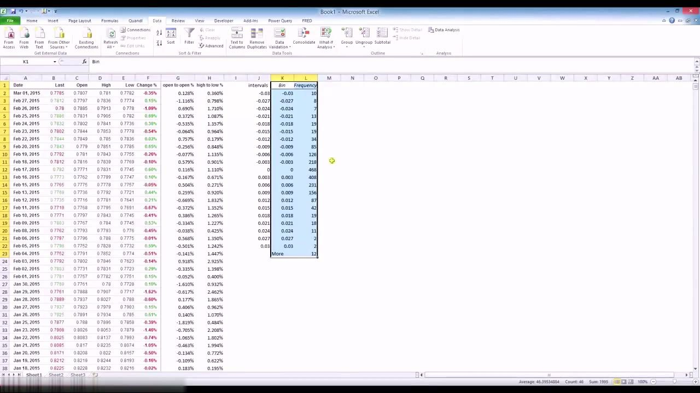
Plotting the histogram (open-to-open)
- Select the Bin and Frequency range (K2:L23), Insert > Column chart, choose the first option to get a histogram.
- Tidy it: delete the Series 1 legend, add the title 'open to open returns', label the y-axis 'Frequency' and the x-axis 'Returns ranges'.
- The result is a bell-shaped curve — more data near the middle than in the tails.
This rough bell shape is what statisticians call a normal distribution — symmetrical around the mean, the same shape you'd get plotting human heights.
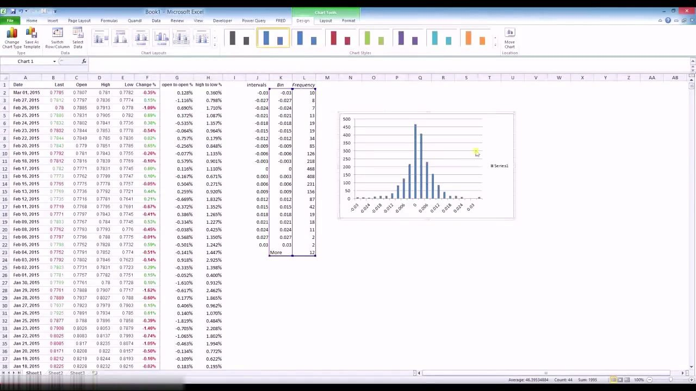
Readable text labels on the axis
- In column M, format the cells as Text and manually label each range: '<-3%', '-3% to -2.7%', '-2.7% to -2.4%' … up to '>3%'.
- Right-click the chart > Select Data > edit the Horizontal (Category) Axis Labels to point at M2:M23 instead of the bin numbers.
- The histogram now reads in plain percent ranges rather than raw interval numbers.
Tedious but necessary — the labels make the distribution instantly interpretable so you know exactly which range each bar represents.
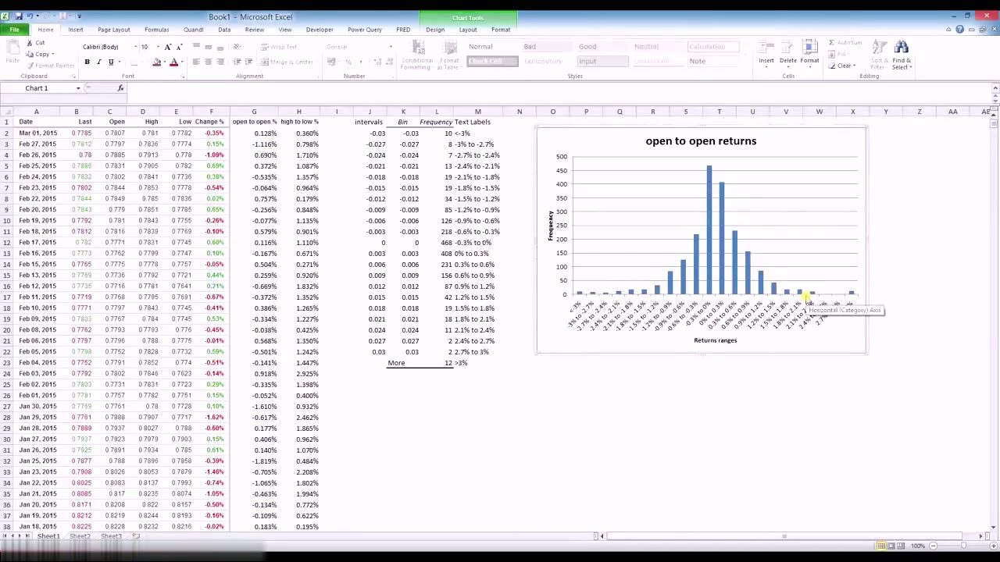
Descriptive statistics
- Data > Data Analysis > Descriptive Statistics on the open-to-open returns (G2:G1996), output to Q1, check Summary Statistics.
- For AUD/USD open-to-open: Mean 0.003%, Median 0.000%, Mode 0.000%, Standard Deviation 0.876%, Kurtosis 10.49, Skewness −0.28, Range 15.077%, Minimum −7.623%, Maximum 7.453%, Count 1995.
- Kurtosis > 0 means peakier around the mean with fatter tails; negative skew means the negative tail is larger; the Sum is irrelevant (it is not the return of holding the position).
Standard deviation is the key statistic — the measure of dispersion (volatility) used for opportunity and risk. Kurtosis and skew tell you how the real distribution departs from a perfect normal one.
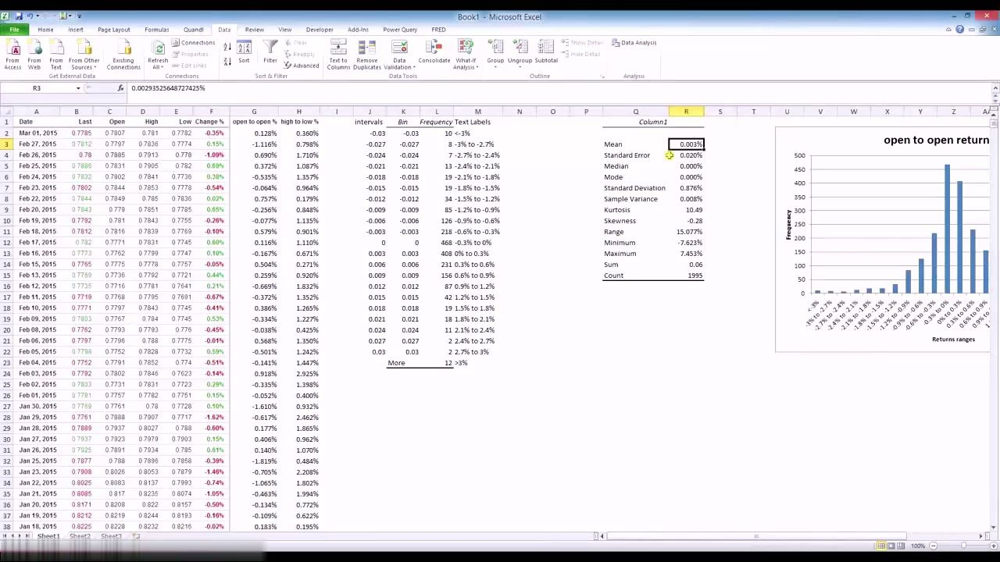
Probabilities and cumulative probabilities
- Probability of each range = frequency / total count, e.g. =L2/$R$15 — press F4 to lock $R$15 (the count) so it stays fixed as you copy down.
- Cumulative probability = current range probability + previous cumulative, building from −3% up to 100% of the data.
- This lets you say things like: 6.32% chance of a daily return between −0.6% and −0.9%, or 3.81% of the time the asset loses 1.5% or more, or ~5% of the time it gains more than a percent.
Frequencies mean nothing without the total count; probabilities are what everyone understands. They turn the raw table into statements about how often each move actually happens.
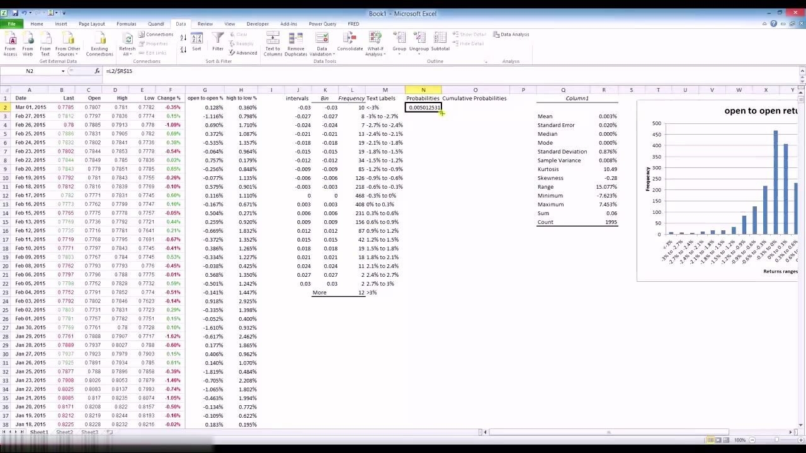
Positive/negative counts and adjusted average returns
- Use SUBTOTAL so the average and count respond to filters: =SUBTOTAL(1, G12:...) for average, =SUBTOTAL(2, G12:...) for count.
- Filter open-to-open > 0 for positives, < 0 for negatives, and paste each result as a value: Av pos ret 0.58% (988 days, 49.52%), Av neg ret −0.57% (986 days, 49.42%), 0 Count 21 (1.05%).
- Probability-adjusted returns = average return × its count-percentage: Adj Av Pos Ret 0.29%, Adj Av Neg Ret −0.28% — the return if you only traded on up (or down) days.
Positive and negative averages are near-mirror images either side of zero — the distribution is symmetric and the daily edge is tiny (~half a percent) even if you call direction perfectly.
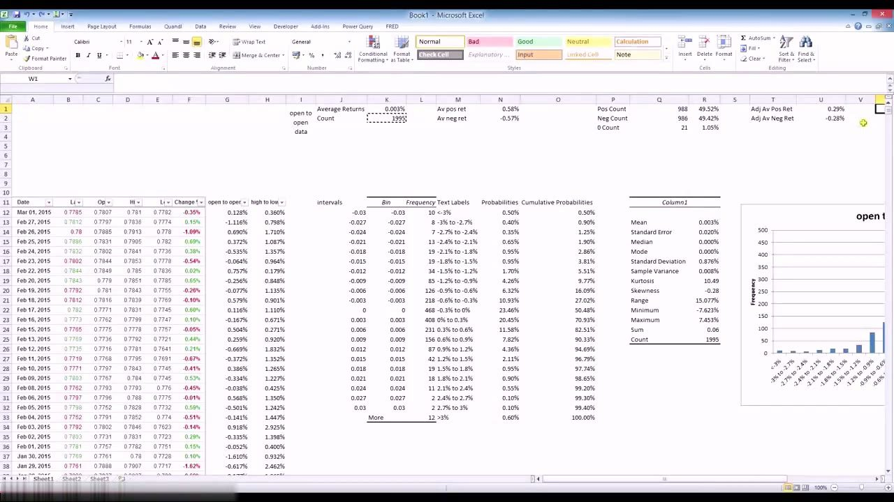
Standard-deviation bands vs the normal distribution
- Upper/lower bands = mean ± (1,2,3 × std dev): for AUD/USD roughly ±0.879% (1σ), ±1.75% (2σ), ±2.63% (3σ).
- Filter the returns between each band, count them, and compare with the normal expectation (68.2% / 95.4% / 99.8%).
- Empirically ~80% of AUD/USD days fall within ±1σ vs the normal 68% (peakier), but slightly LESS than normal at ±2σ and ±3σ — the missing middle data reappears in fatter tails.
- For EUR/USD the actual coverage is 74.40% / 94.24% / 98.58% vs normal 68.20% / 95.40% / 99.80%.
FX returns are NOT perfectly normal: more days cluster around the mean than normality predicts, and the extreme tail events are also more frequent. Standard deviation is still the go-to comparable risk measure because a normal curve is fully defined by just mean and std dev.
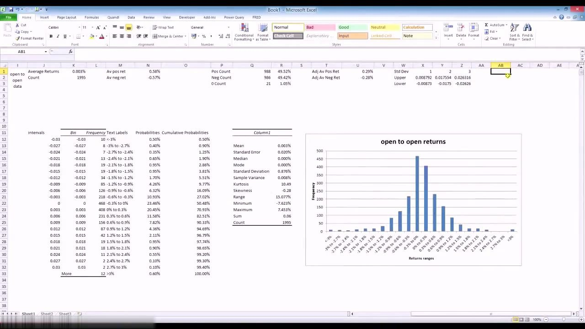
High-to-low returns: a lopsided distribution
- High-to-low returns can never be below 0% (you buy the low, sell the high), so the distribution is right-skewed and the normal / std-dev analysis is void.
- Build intervals from 0.2% up in 0.2% steps to 4%, run the histogram (input H12:H2007) and read the frequency/probability table.
- AUD/USD high-to-low: Mean 1.165%, Max 10.89%, Kurtosis 21.15, Skewness 3.44 — for high-to-low you focus on the mean (average perfect day) and the maximum, not standard deviation.
- From the table, moves greater than 4% between high and low occur about 1.65% of the time.
Because a negative daily range is structurally impossible, the bell curve breaks — so this series is judged by its average perfect-day magnitude and its extremes rather than by standard deviation.
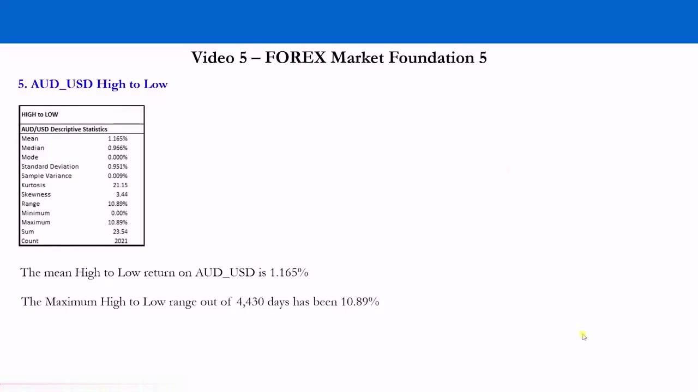
AUD/USD vs EUR/USD: same method, different beast
- Open-to-open std dev: AUD/USD 0.867% vs EUR/USD 0.629% — AUD is the more volatile pair.
- Average up/down day: AUD/USD ±0.29% vs EUR/USD ±0.21% (only if you pick the right direction).
- High-to-low average day: AUD/USD 1.165% vs EUR/USD 0.823% — almost twice the magnitude; max range AUD 10.89% vs EUR 4.22%.
- Every risk measure is higher for AUD/USD — greater risk and, hand in hand, greater opportunity than EUR/USD.
Same build, two currencies: AUD/USD moves more because of concentrated exposure to one or two commodities, while EUR/USD has diverse exposure and lower volatility. Both are still coin-toss on direction with tiny daily edges.
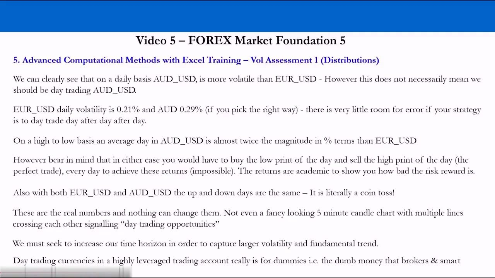
The 'All Tradable' volatility ranking
- Ranking all 27 pairs by open-to-open standard deviation, top to bottom: AUD_JPY 1.198%, USD_ZAR 1.101%, USD_RUB 1.069%, EUR_RUB 0.970%, CHF_JPY 0.906%, AUD_USD 0.887%, GBP_JPY 0.887%, EUR_JPY 0.883%, USD_SEK 0.866%, USD_NOK 0.836%, GBP_ZAR 0.820%, GBP_CHF 0.768%, USD_CHF 0.768%, USD_JPY 0.650%, EUR_CHF 0.642%, EUR_HUF 0.620%, AUD_CAD 0.606%, USD_CAD 0.602%, EUR_USD 0.590%, GBP_USD 0.584%, EUR_NOK 0.534%, GBP_EUR 0.467%, AUD_NZD 0.462%.
- The group averages: Commodity Minors 0.888%, Commodity Majors 0.751%, Ex-Commodity Minors 0.743%, Ex-Commodity Majors 0.714%.
- EUR/USD sits almost at the bottom; GBP/USD and GBP/EUR are even lower — the least volatile pairs are exactly the ones brokers push retail traders toward.
This is the FX opportunity-set volatility screen: it shows objectively where opportunity and risk lie across the whole tradable set — and why day-trading the low-volatility majors is a fool's game for retail money.
Conclusion: increase the time horizon
- On an absolute basis, daily FX opportunity is objectively tiny — up and down days are ~50/50, so no five-minute chart or technical overlay changes the numbers.
- On a relative basis, the ranking still guides you: more volatile pairs (commodity currencies) offer more to capture than the diverse majors.
- The takeaway: increase the time horizon to weekly and monthly data to capture larger volatility and fundamental trend — which sets up the ATR method in Video 6.
The data sends a clear message: day-trading highly leveraged currencies is the dumb-money approach the brokers profit from. Real opportunity requires a longer horizon — the next video's simpler ATR method reaches very similar conclusions.
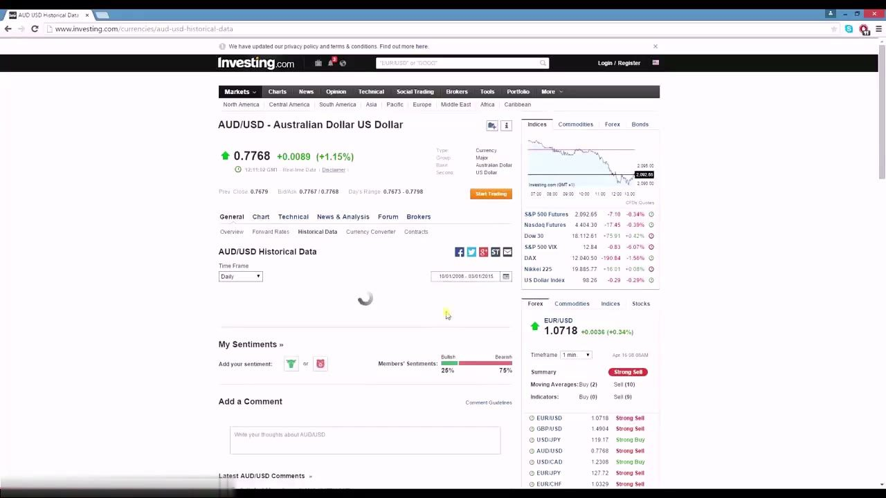
Glossary
- Open-to-open % returnDay-over-day drift: (today's open − yesterday's open) / yesterday's open, e.g. =(C4-C5)/C5. Roughly normally distributed.
- High-to-low % returnThe intraday 'perfect day' range: (High − Low) / Low of the same day. Structurally cannot be below 0%, so it is right-skewed.
- Frequency tableA count (via the Histogram tool) of how many daily returns fall into each interval/bin range.
- ProbabilityFrequency of a range divided by the total count, e.g. =L2/$R$15 — the historical chance of a return landing in that range.
- Cumulative probabilityRunning sum of range probabilities from the lowest range up, ending at 100% of the data.
- Standard deviationThe core measure of dispersion / volatility; the go-to comparable risk metric across assets. AUD/USD 0.867% vs EUR/USD 0.629% open-to-open.
- KurtosisHow peaked the distribution is around the mean and how fat its tails are; > 0 means peakier with fatter tails than a normal distribution.
- SkewnessAsymmetry of the distribution; negative skew means a larger negative tail, positive skew a larger positive tail.
- Normal distributionA symmetric bell curve fully defined by mean and std dev, covering 68.2% / 95.4% / 99.8% of data within ±1/±2/±3 std dev.
- Fat tailsReal FX returns cluster more tightly around the mean AND have more extreme moves than a normal distribution predicts.
- Adjusted average returnAverage positive (or negative) return × the frequency of positive (negative) days — the return earned trading only up (or down) days. AUD/USD ≈ 0.29% / −0.28%.
- Tradable setThe four-way classification of floating pairs: Ex-Commodity Float Majors/Minors and Commodity Float Majors/Minors.
- Pips vs percentPips are not a one-for-one base system, so volatility must be compared in percent to compare pairs like-for-like.